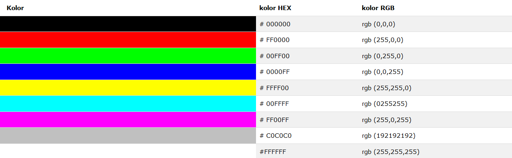
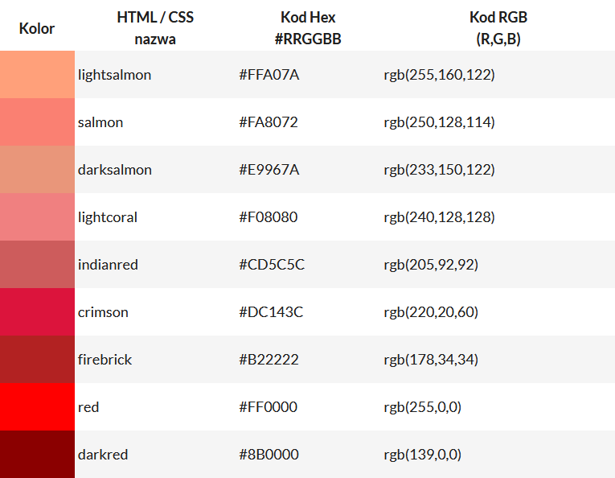
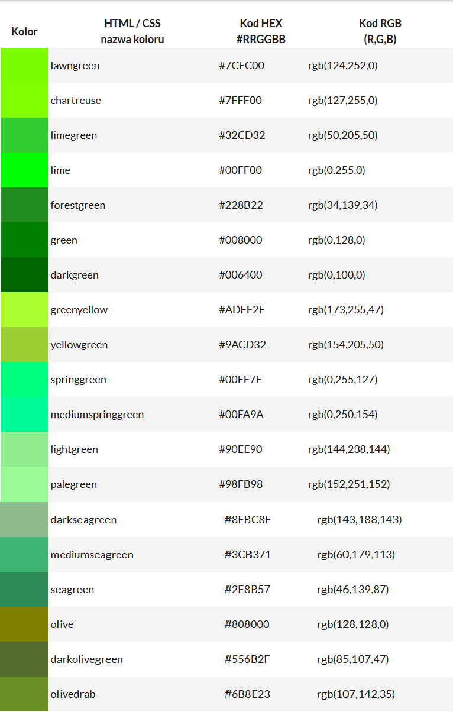
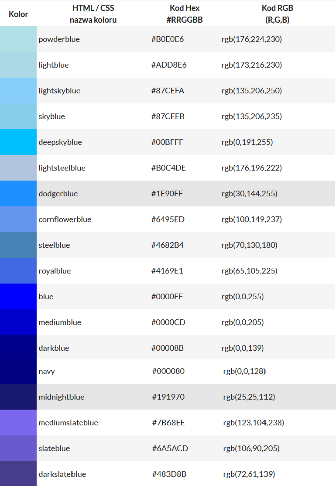
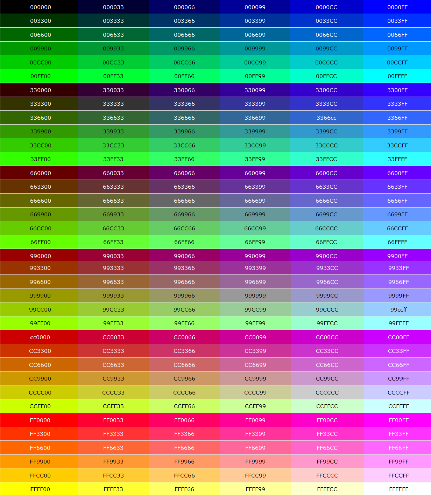
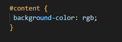
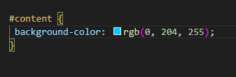
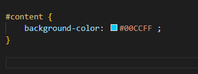

Wartości kolorów
Kolory CSS są definiowane za pomocą systemu szesnastkowego (HEX) stosując notację kombinacji czerwony, zielony i niebieski dla wartości kolorów (RGB) . Najniższa wartość, która może być podawana na jedno ze źródeł światła jest 0 (HEX 00) . Najwyższa wartość wynosi 255 (HEX FF) . Wartości HEX są zapisywane jako 3 podwójne liczby dwucyfrowe, począwszy od znaku #.
Przykład:
Przykład zapisu HEX I RGB odcieni koloru czerwonego
Przykład zapisu HEX I RGB odcieni koloru zielonego
Przykład zapisu HEX I RGB odcieni koloru niebieskiego
RGB
Połączenie wartości czerwony, zielony i niebieski od 0 do 255 daje w sumie ponad 16 milionów różnych kombinacji kolorów (256x256x256). Większość nowoczesnych monitorów zdolnych jest do wyświetlania przynajmniej 16384 różnych kolorów Wiele lat temu, gdy komputery obsługiwały maksymalnie 256 różnych kolorów, lista 256 "Web Safe Colors" została zaproponowana jako standard Web (zastrzeżenie 40 stałych kolorów systemowych). Obecnie nie jest to już istotne, ponieważ większość monitorów może wyświetlać miliony różnych kolorów.
Przykład:
Zastosowanie
w poprzedniej części został przedstawiony system zapisu wartości kolorów bez pokazania jak to działa. Poniżej jest graficzne przedstawienie calego procesu
kod:
jesli w miejsce rgb damy daną wartość na przykład będziemy chcieli wyświetlić kolor błękitny to oznaczymy to w ten sposób:
Zapis w HEX
